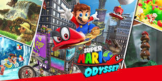
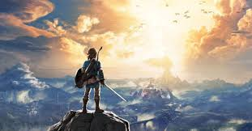

Super Mario Odyssey
Gure pertsonai maitea bueltatzen da. Aukera honetan Bowser geldiarazi egin behar du, Peach printzesa bahitu duena, eta txano magiko bat lagunduko dio Mariori. Oso jolas interesgarria da, eta ikuspegi berri bat ematen dio Marioren munduari.
Legend of Zelda Breath of the Wild
Gure protagonistak, Link, bere oroimena galdu du, eta mundutik bidaiatu behar du hau berreskuratzeko. Mundu honetako paisaiak izugarriak dira, eta ia egiazkoak direla dirudite. Lasaitzeko eta bideojolas on bat gozatzeko perfektua da.